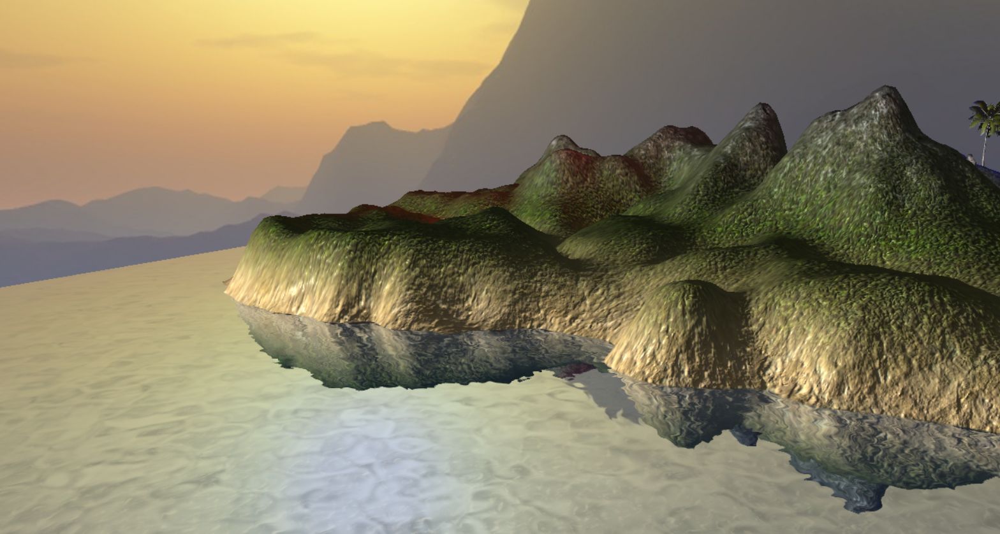

Rendering an Island Scene
As part of the course at Newcastle University, I was tasked with creating a graphical scene themed around a tropical island. I used OpenGL to achieve this, employing a range of graphical techniques that you can see below:
- Used a heightmap to generate the terrain
- Implemented the Blinn-Phong lighting model. Directional, point and spot lights are supported
- The scenes is managed with a scene graph, with seperate lists for opaque and transparent objects
- The trees are instanced rendered, with their transforms written to a uniform buffer for additional efficiency
- Using a cubemap for the skybox
- Vertex skinning for animated meshes
The water is probably the most complex part of the scene and the part that I'm most proud of. First, everything above the water is rendered into a texture which is then projected onto the water's surface, this creates our reflection. Then the same is done to the area below the water, acting as the refraction texture. In the shader, I sample a dudv map in both the x and y directions. Adding this value to the input texture coordinates results in a refraction effect when the refraction texture is sampled. Waves are simulated by adding a varying water movement value to the coordinates. To achieve a Fresnel effect, I take the dot product of the view direction and the calculated normal and mix it in with the reflect and refract textures. Another feature of the water is that it is transparent at low depths, as you'd expect to see in real life. This is done by calculating the distance between the camera and the terrain under the water. The shader uses to the reflection depth buffer to do this. Then the alpha channel of the final output colour is set to the calculated depth value, divided by a desired threshold, and clamped between zero and one.